Watch a whole album come together in 90 seconds
Download and install
Current version …
Windows 10 or 11. PDF export uses Edge or Chrome, which Windows already has.
macOS 11 or newer. PDF export needs Chrome, which is free.
Download for Mac is for Apple silicon (M1 and newer). Older Mac with an Intel chip? Use the Intel button. Not sure? Apple menu › About This Mac shows which you have.
-
1. Run the installer
Open the file you downloaded. Windows may show a blue box, "Windows protected your PC". During the beta the installer isn't signed yet, so click More info, then Run anyway. Then click Next until it finishes.
-
1. Install and open the app
Open the file you downloaded and drag FlowAlbum onto Applications. Then open it from Applications. During the beta the app isn't signed with an Apple account yet, so the Mac says it "Not Opened": click Done. Open System Settings › Privacy & Security, scroll down, click Open Anyway next to FlowAlbum and confirm with your password or Touch ID. You only do this the first time.
Doesn't work? Use Terminal
Open Terminal, paste this line and press Return, then open the app again:
xattr -dr com.apple.quarantine "/Applications/FlowAlbum.app" -
2. Connect Claude (optional)
FlowAlbum opens in your browser. To let Claude read your photos and chat with you, you need a Claude key: sign in at console.anthropic.com, add a few dollars under Billing, then open API keys › Create key and copy it.
Then, in FlowAlbum, open Settings › App, paste the key into Anthropic API key and save. You can skip all this: layouts work without a key.
A whole album of 100 photos costs a few cents to about a dollar, depending on the model you choose in Settings. Keep the key private: it is like a password for your Claude account's credit.
Prefer to watch? Create a Claude API key · Add credit for Claude
How would you like to work?
Pick one, and a step-by-step guide opens below.
-
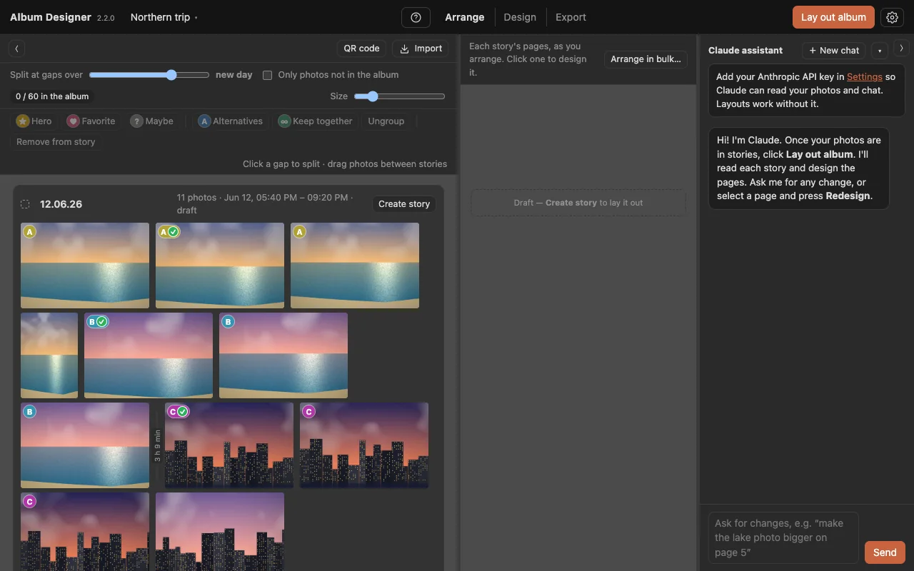
1. Add photos
Drag your JPEGs into the window, or click Import. Claude starts reading them right away.
-
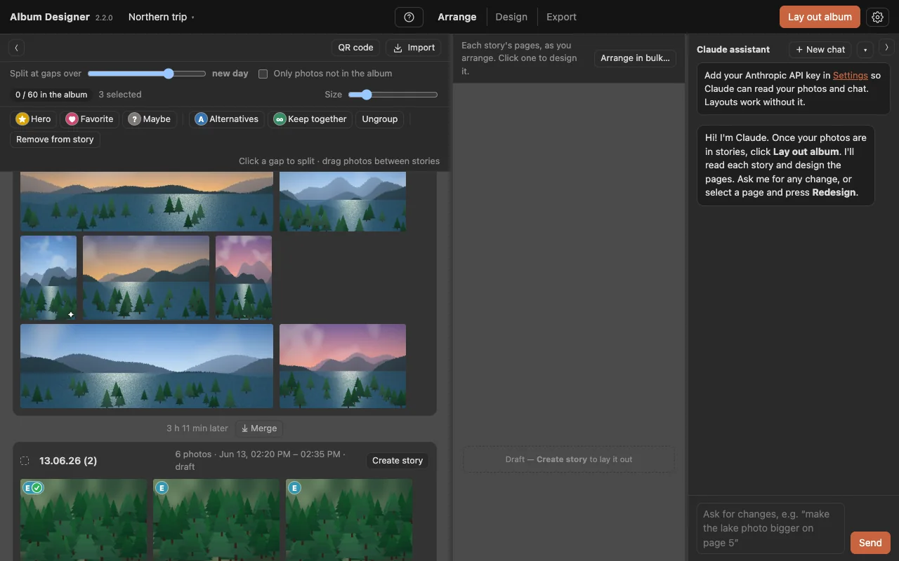
2. Split photos into stories
In the Photos tab, group your photos into stories by time, or split and merge the groups yourself. Tag your favorites to steer the design. This step is optional.
-
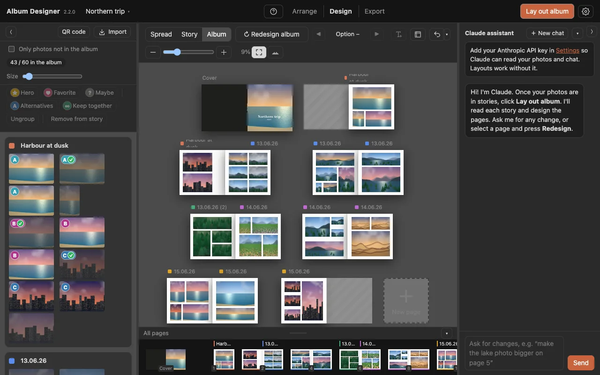
3. Design album
One button, Design album, turns your groups into stories and designs every page. Stories you already designed are left alone.
-
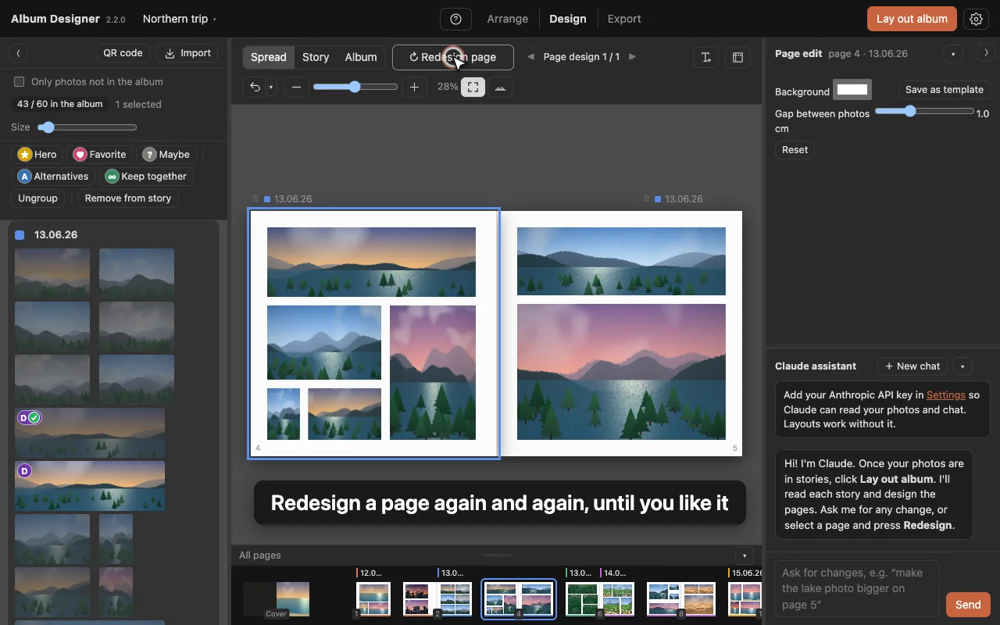
4. Redesign with a click
Redesign a page, a spread or a story with a click, or press R.
-
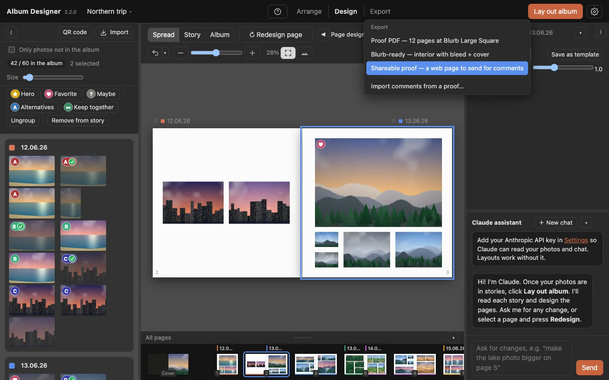
5. Export
Export a proof PDF to look through, or print-ready files for your print provider.
-
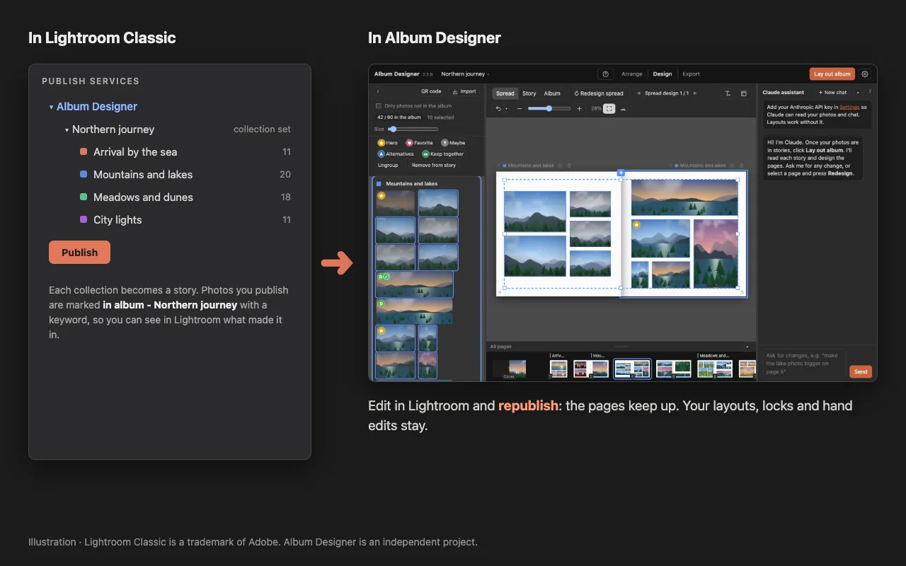
1. Publish from Lightroom
The plugin turns Lightroom collections into stories and marks published photos "in album". Edit in Lightroom and republish: the pages keep up.
Download the Lightroom plugin A small zip, for Lightroom Classic.
- Unzip it. In Lightroom Classic, choose File › Plug-in Manager… › Add and pick the AlbumDesigner.lrplugin folder.
- In the Publish Services panel, click Set Up… next to FlowAlbum and type your album's name. FlowAlbum must be running.
- Right-click the service › Create Published Collection…, one per story. Drag photos in and click Publish.
-
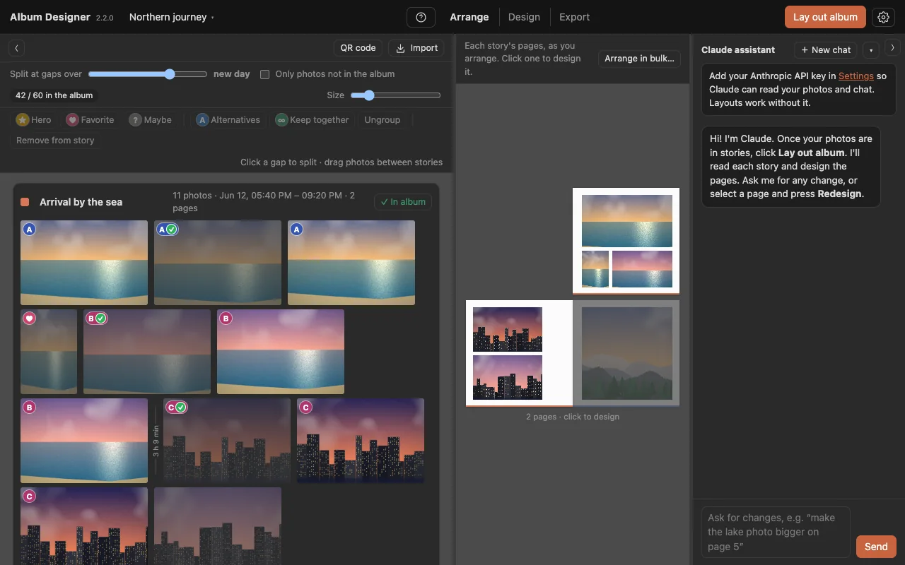
2. Organize and mark
Tag heroes, favorites and maybes. Near-identical shots are found as alternatives: compare them side by side (Space) and keep the best one. Keep photos together on one page when they belong.
-
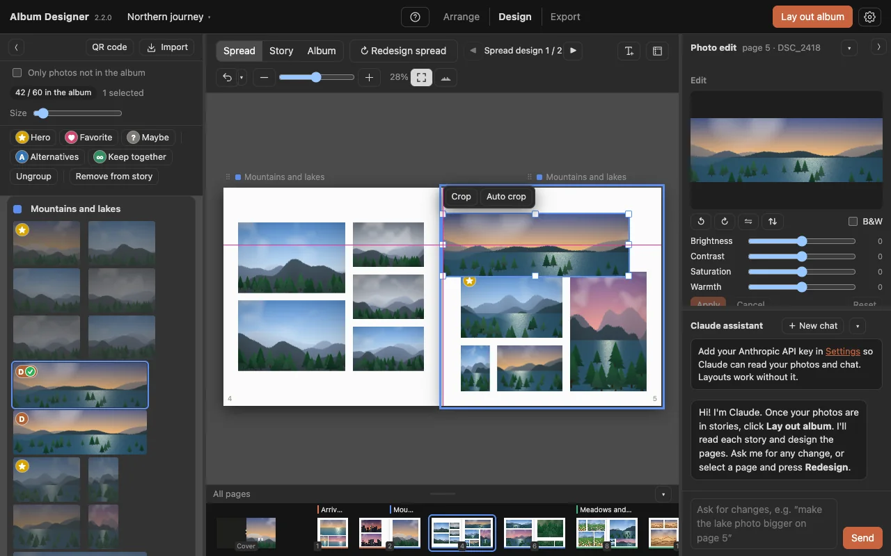
3. Design spread by spread
The spread is the canvas: move, resize and crop anywhere, even across the fold, with guide lines and equal-spacing snapping to help. Double-click to crop, and the gap slider spaces a page, a spread or a whole story. Warnings show soft prints and cut-off faces.
-
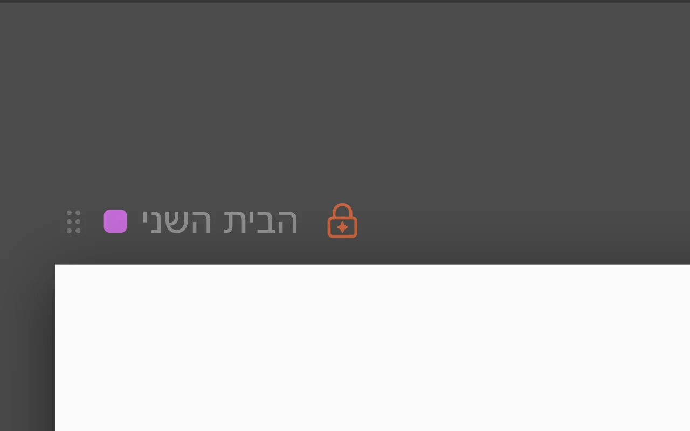
4. Lock what is finished
Press L to AI-lock the page you have finished (each page has its own lock). Redesigns, Design album and Claude leave it exactly as it is, and your own edits still work.
-
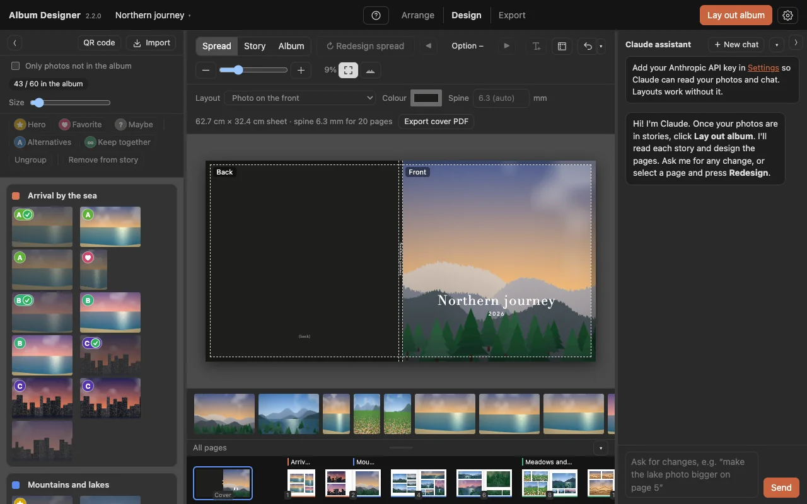
5. Text and cover
Text boxes with Hebrew and right-to-left support, and a cover designer.
-
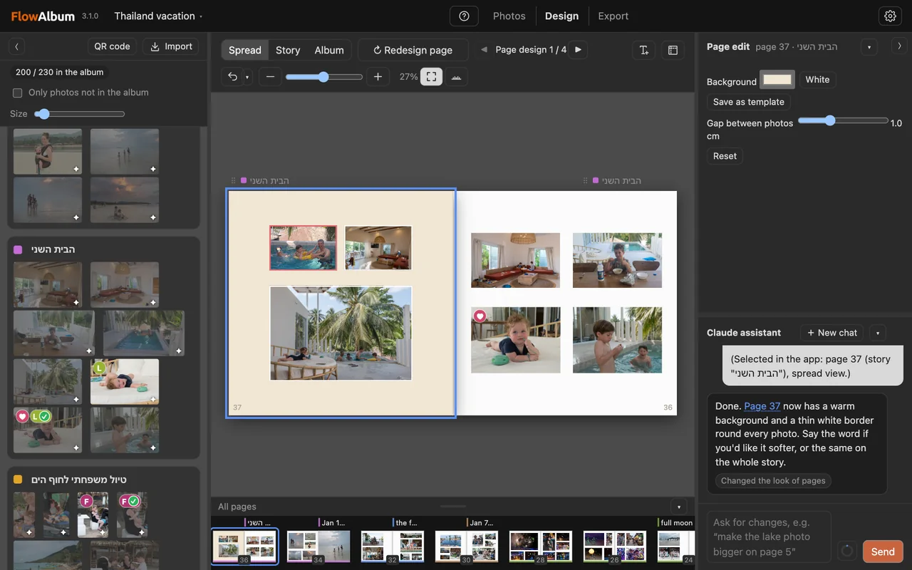
6. Ask Claude
"Make the lake photo bigger on page 5." Claude changes the album through the same tools you use: gaps, backgrounds, borders, moving and swapping photos. It respects your locks.
-
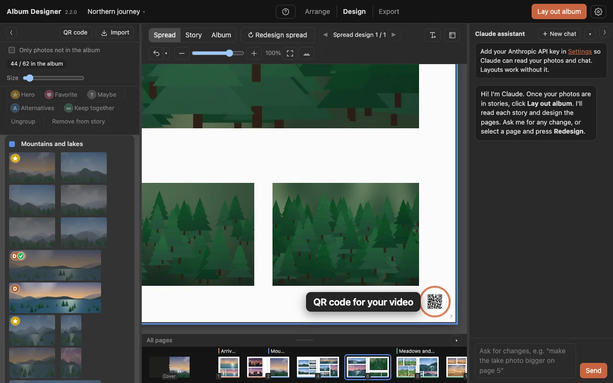
7. A QR code for a video
Add a QR code for a video link, for example a YouTube film of your trip. It is printed small in a free spot on the last page of its story, and readers scan it with their phone to watch the video.
-
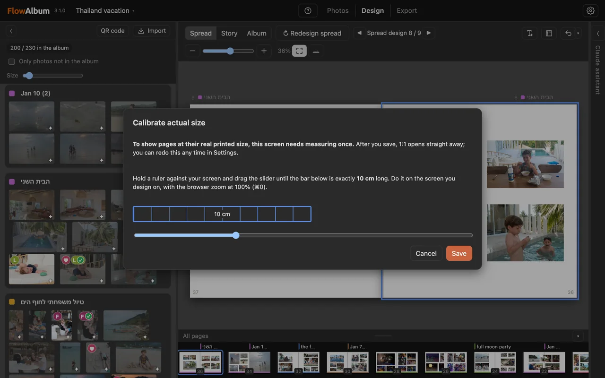
8. See the real printed size
Press 1:1 (⌘1) to see the spread at the size it will be printed, so you can judge photo sizes and text as they will look in your hands. The first time, hold a ruler to your screen and drag the slider until the bar is exactly 10 cm. You measure once, and you can redo it any time in Settings.
-
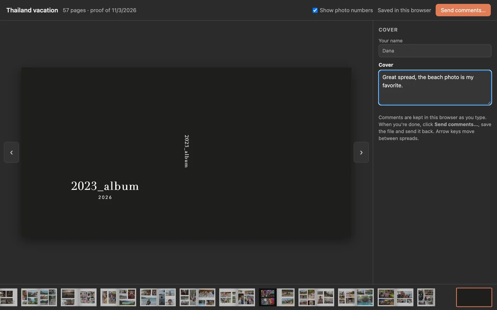
9. Proof and print
Send a shareable proof: a web page that opens in any browser, where family and friends write comments for each page. Import their comments back, then export print-ready files for your print provider, with bleed and safe zones. Duplicate an album to try another design without touching the original.
Video library
Short how-to videos, one for each thing you can do.
Tell us what you think
Found a bug, want a feature, or stuck on something? Write it here. It reaches the developer directly.
Questions
Do I need Lightroom?
No. Drag in JPEGs. The Lightroom plugin is for photographers who edit there and want the album to follow their changes.
Where do my photos go?
Albums are stored on your computer, in Documents › FlowAlbum. When you add a Claude key, small copies of your photos are sent to Anthropic so Claude can read them. Nothing else leaves your computer.
What does Claude cost?
You pay Anthropic directly for what you use, with your own key. Reading 100 photos costs about three cents with the default model. The app shows an estimate of what you have spent.
Is it safe to click "Run anyway"?
Windows warns about every app that isn't signed with a paid certificate. During the beta the installer isn't signed. Download it only from this page.
Is it safe to click "Open Anyway" on a Mac?
The Mac warns about every app that isn't signed through Apple's paid developer program. During the beta the app isn't signed. Download it only from this page.
Which printers and sizes?
The default is Blurb's Large Square. You can set any page size and margins, and the proof PDF works with any printer.
Does it work in Hebrew?
Yes: right-to-left albums, Hebrew text and fonts, and Claude writes titles in Hebrew for those albums.